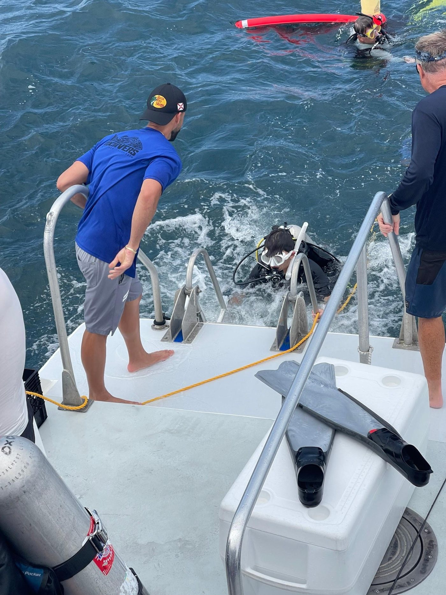
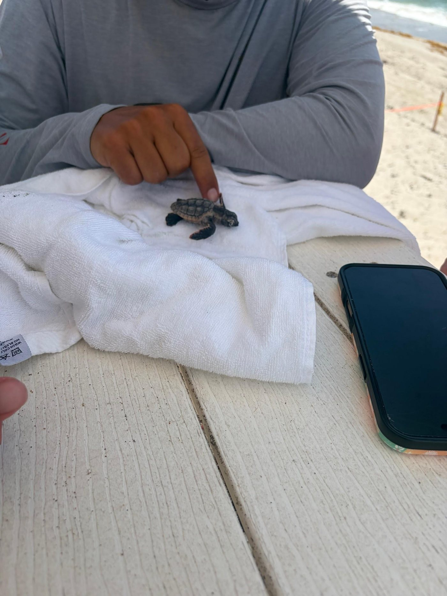

The Ocean
I scuba dive, free dive, and spent a summer helping save sea turtles on my local Florida beaches. Being in the water that often means watching first-hand how climate change and greenhouse gases affect marine ecosystems. Every year the water clarity, reefs, and nesting spots are being destroyed.
That's what pulled me toward Sailplan, where I worked with clients including the U.S. Navy, U.S. Army, and Disney Cruise Line to help reduce their emissions footprint. I didn't just learn fundraising and business development there, I got to see the work actually move the needle in my local waters. It's why I'm genuinely passionate about investing in renewable energy and climate tech, not just because the numbers work, but because I've seen the problem up close.

